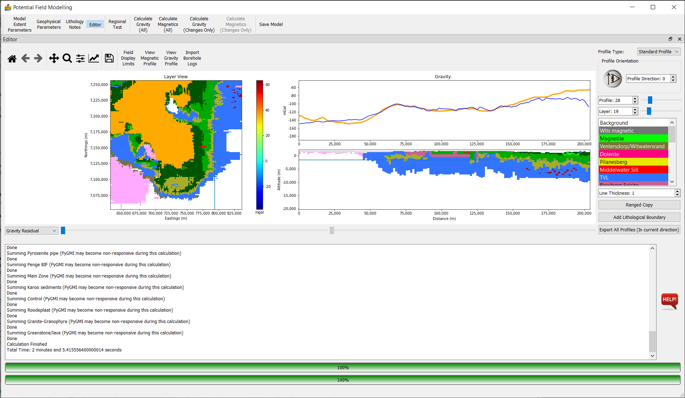
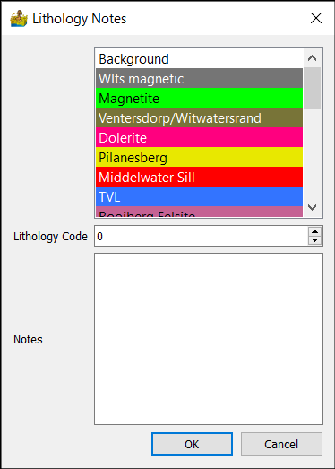
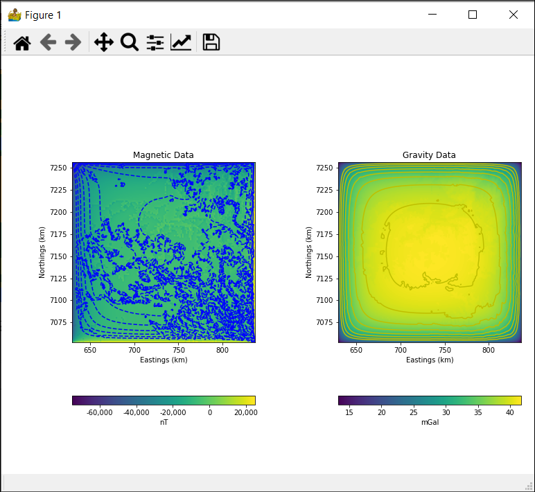
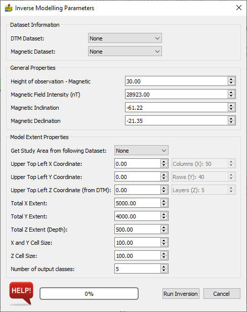

Potential Field Modelling: Description of Modules¶
Import 3D Model¶
This model imported model created in PyGMI. The models use the Numpy .npz format. Each .npz file will contain the voxel model, along with raster datasets associated with that model.
Merge 3D Models¶
The merge 3D models tool allows for the merging of two 3D models into one single model.
It makes the following important assumptions:
There are only TWO input models.
If two lithologies have the same name, they are the same and settings from the Master are to be used.
If a lithology is in the Slave model, and not in the Master, it is copied into the Master.
If the Master and Slave dataset do not align, the slave is modified to fit the Master
Options:
Master Dataset - This is the dataset which will be added to. Its values are not changed.
Slave Dataset - This dataset is incorporated into the Master.
Model Creation and Editing¶
This module is the potential field modelling section of PyGMI. The output from here is a voxel model which can be displayed in 3D using the right-click context menu on a green module. The module comprises a series of Tabs, which are described below. The actual calculation of the magnetic and gravity field data is based on the work by Blakely (1996).
Model Extent Parameters¶
This dialog sets up the extents of the model. The Current Models section displays the imported models. The current model is the model being edited. The regional model is a model used to apply a regional correction to field calculations.
The Dataset Information section associates connected raster datasets with the either DTM, magnetic data, gravity data or gravity regional data. If you are modelling actual data, this module will insist on DTM data. If nothing else, DTM data can be obtained from the SRTM archives.
The Model Extent Properties section sets up the model extents - by default from an associated DTM. Of importance are the X, Y and Z cell sizes. This determines the number of rows, columns and layers in the model. As a rule of thumb, models bigger than 100x100x100 may be slow, although this will depend on the hardware available.
Current Model¶
This only applies if you are importing a 3D model. It is the current model which you are working on.
Dataset Information¶
This is used to define the data connected to the modelling module. The data is either connected manually or will be embedded withing a 3D model file.
DTM Dataset - This is a Digital Terrain Model or Digital Elevation Model (DEM) of your area of study. If you are modelling actual data, this is compulsory. If nothing is available, download the SRTM data from NASA. It is not necessary if you are merely doing a theoretical model of, say, a dyke.
Magnetic Dataset - This is the magnetic data to be modelled.
Gravity Dataset - This is the gravity data to be modelled.
Gravity Regional Dataset - This is a gravity regional dataset used to apply a regional correction to the gravity data.
Other - This option can be used to add an additional layer for comparison purposes - for example a GeoTIFF of the geological map.
Model Extent Properties¶
The model extents control the area size and depth of your model, as well as its resolution. Typically one of your datasets are used to fill in most of the fields automatically. Because the DTM is compulsory to the modelling, this is normally the default choice.
Get Study Area from following Dataset - Usually the DTM dataset is chosen, but it can be any of your datasets.
Upper Top Left X Coordinate - This is the north-west corner X coordinate of your model in meters.
Upper Top Left Y Coordinate - This is the north-west corner Y coordinate of your model in meters.
Upper Top Left Z Coordinate - This is the north-west corner Z coordinate of your model in meters above sea level.
Total X Extent - the distance from east to west in the model.
Total Y Extent - the distance from north to south in the model.
Total Z Extent - the depth range of the model.
X and Y Cell Size - the width of each model cube in the x and y direction.
Z Cell Size - the height of each model cube in z direction.
Number of Columns (X Direction) - This is calculated automatically from extents and cell sizes.
Number of Rows (Y Direction) - This is calculated automatically from extents and cell sizes.
Number of Layers (Z Direction) - This is calculated automatically from extents and cell sizes.
Tips¶
Start with a low resolution model to get a general model in place first. 20x20x20 should be fine, since any bigger will get slow to model.
Once your low resolution model is complete, you can increase the model’s resolution to a better resolution. Please note that bigger than 100x100x100 will cause calculations to become very slow (unless you have lots of memory).
Editor¶
The layer view allows for the voxel model to be edited from above. Simply select a lithology and draw the model in, as you would in a paint program. Changing the layer allows for the drawing in of lithologies at deeper depths. Please note that on the first few layers there may be sections which are air (due to the DTM), and are thus not editable.
The profile view allows for the voxel model to be edited from the side. Simply select a lithology and draw the model in, as you would in a paint program. Changing the profile allows for the drawing in of lithologies at different locations.
The display of magnetic data or gravity data is changed upon calculation of either data type.
Top Toolbar¶
This toolbar gives a number of options to modify the model parameters, or perform calculations. The options are as follows:
Model Extent Parameters - options for setting the dimensions and location of the model, as well as the datasets.
Geophysical Parameters - parameters for gravity and magnetic modelling are set here.
Lithology Notes - simple interface to store lithology notes.
Editor - this is an option to minimise or maximise the main editor interface.
Regional Test - A test of field decay to see if the dimensions of the model are large enough.
Calculate Gravity (All) - all lithologies and voxels are recalculated for gravity data.
Calculate Magnetics (All) - all lithologies and voxels are recalculated for magnetic data.
Calculate Gravity (Changes Only) - only changes lithologies are used for recalculations.
Calculate Gravity (Changes Only) - only changes lithologies are used for recalculations.
Save Model - Convenience option to save the model from within the interface.
Editor Options¶
Profile Type - allows for standard profiles, or custom profiles with beginning and endpoint defined by the user.
Profile Orientation- allows for the selection of the profile direction.
Profile - allows for the selection of the profile being modelled. A slider provides convenient setting of this parameter.
Layer - allows for the display and/or selection of the profile being modelled. The Altitude associated with the layer is also displayed.
Lithology List - Use this to select which lithology that you are currently drawing. To erase, simply select the Background lithology and draw with that.
Line Thickness - This allows you to change the pen thickness, which you are drawing with.
Ranged Copy - The ranged copy function allows for the copying of a lithology on the current layer over a range of layers. You can choose which layers to copy to, and which lithologies can be overwritten.
Add Lithological Boundary - Adds a grid to be used as a horizontal lithological boundary. It can be used if you have, say, a grid of the crust or the bedrock to add to your model.
Export All Profiles - Export an X,Y,Z file of the profile data.
Dataset Drop Box - Allows for a dataset to be faded in and out of the layer with the aid of a slider. This can help when you need to know where the boundaries of geological units are.
Field Display Limits - This changes the scale of the Y-Axis. This can be important after performing a calculation, to see the full effect of the calculation.
View Magnetic Profile - used to select the magnetic data for the profile.
View Gravity Profile - used to select the gravity data for the profile.
Import borehole logs - used to import borehole logs (imported from the borehole menu, and connected to the modelling module)
Calculations¶
Calculations can be done by choosing one of two options from the menu bar at the top of the program:
Ranged Copy¶
The ranged copy tool allows for the copying of a lithology from one layer or profile, across a range of other layers or profiles.
The tool allows for the user selecting which other lithologies to overwrite.
Options:
Master Profile - The profile from which to copy a lithology.
Range Start - The first profile which the master profile will copy to.
Range End - The last profile which the master profile will copy to.
Lithologies to Copy - The user can select which lithologies to copy. This can be more than one.
Lithologies to Overwrite - The user can select which lithologies to overwrite. This can be more than one. Under most circumstances, you will probably just select Background.
Tips¶
The ranged copy function can be very useful in getting a starting model going. Draw in your basic lithology boundary and copy it over a range of applicable depths.
Geophysical Parameters¶
This dialog allows for setting all the geophysical parameters for your model. Some are general - such as survey parameters associated with the data, while others are specific to each lithology being modelled.
General Properties¶
Gravity Regional - Gravity data needs to have a regional subtracted so that the theoretical and measured anomalies coincide. PyGMI allows you to enter this correction here.
Height of observation - Gravity - This is the gravity sensor height.
Height of observation - Magnetic - This is the gravity sensor height.
Magnetic Field Intensity - This is the intensity of the magnetic field at the time of the survey. You can get this from NOAA.
Magnetic Inclination - This is the inclination of the magnetic field at the time of the survey. You can get this from NOAA.
Magnetic Declination - This is the declination of the magnetic field at the time of the survey. You can get this from NOAA.
Lithological Properties¶
PyGMI sets up geophysical properties on a lithology basis, and not on a body by body basis.
Lithological Definitions List:
Add New Lithological Definition - allows for adding a new definition. The user will also be able to select the colour of the definition.
Rename Current Definition - allows for renaming a selected definition.
Remove Current Definition - allows for deleting a selected definition.
Merge Definitions - allows for the merging of two definitions.
Lithological Properties - Background:
By selecting a lithology from the lithology list, its associated properties are shown here. The background lithology denotes properties associated with background (unmodelled) geology. This should be left alone under normal circumstances
Density - density of your lithology (g/cm3). It applies to gravity modelling.
Magnetic susceptibility (SI) - susceptibility of your lithology. It applies to magnetic modelling.
Remanent Magnetization Intensity (nT) - Applies to lithologies with remanence.
Remanent Magnetization (A/m) - Applies to lithologies with remanence.
Q Ratio - Applies to lithologies with remanence.
Remanent Inclination - Applies to lithologies with remanence.
Remanent Declination - Applies to lithologies with remanence.
Apply Changes - apply changes to the current lithology

Lithology Notes¶
Each lithology can have a lithology code and lithology notes assigned to it.
Regional Test¶
In magnetic and gravity modelling, the calculated field will decay past the edges of the model. 2.5D modelling deals with this problem by adding a strike parameter where the body is automatically extended perpendicular to the profile by a constant amount. This is not the case in 3D modelling. For this reason, it is important to pad the edge of the model to ensure that the calculated field remains accurate. The regional test shows the rate of decay using one of your lithologies, to give an indication of whether your model is affected by this decay.
3D Magnetic Inversion¶
This dialog sets up the parameters for 3D magnetic inversion, which uses the SimPEG library. The Dataset Information section associates connected raster datasets with the either DTM or magnetic data. Data are output as a number of classes, in line with the lithology principle which PyGMI uses. The output from inversion can therefore be directly input into the modelling module.
The Model Extent Properties section sets up the model extents - by default from an associated DTM. Of importance are the X, Y and Z cell sizes. This determines the number of rows, columns and layers in the model. As a rule of thumb, models bigger than 100x100x100 may be slow, although this will depend on the hardware available.
Dataset Information¶
This is used to define the data connected to the modelling module. The data is either connected manually or will be embedded withing a 3D model file.
DTM Dataset - This is a Digital Terrain Model or Digital Elevation Model (DEM) of your area of study.
Magnetic Dataset - This is the magnetic data to be modelled.
General Properties¶
These general properties are important for the inversion. If they are incorrect, or if there is extensive remanence in the are, the inversion results may be poor.
Height of observation - Magnetic - This is the magnetic sensor height.
Magnetic Field Intensity - This is the intensity of the magnetic field at the time of the survey. You can get this from NOAA.
Magnetic Inclination - This is the inclination of the magnetic field at the time of the survey. You can get this from NOAA.
Magnetic Declination - This is the declination of the magnetic field at the time of the survey. You can get this from NOAA.
Model Extent Properties¶
The model extents control the area size and depth of your model, as well as its resolution. Typically one of your datasets are used to fill in most of the fields automatically. Because the DTM is compulsory to the modelling, this is normally the default choice.
Get Study Area from following Dataset - Usually the DTM dataset is chosen, but it can be any of your datasets.
Upper Top Left X Coordinate - This is the north-west corner X coordinate of your model in meters.
Upper Top Left Y Coordinate - This is the north-west corner Y coordinate of your model in meters.
Upper Top Left Z Coordinate - This is the north-west corner Z coordinate of your model in meters above sea level.
Total X Extent - the distance from east to west in the model.
Total Y Extent - the distance from north to south in the model.
Total Z Extent - the depth range of the model.
X and Y Cell Size - the width of each model cube in the x and y direction.
Z Cell Size - the height of each model cube in z direction.
Number of output classes.
Number of Columns (X Direction) - This is calculated automatically from extents and cell sizes.
Number of Rows (Y Direction) - This is calculated automatically from extents and cell sizes.
Number of Layers (Z Direction) - This is calculated automatically from extents and cell sizes.
Tips¶
Start with a low resolution model to get a general model in place first. 20x20x20 should be fine, since any bigger will get slow to model.
Once your low resolution model is complete, you can increase the model’s resolution to a better resolution. Please note that bigger than 100x100x100 will cause calculations to become very slow (unless you have lots of memory).
